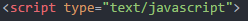
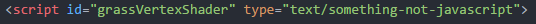
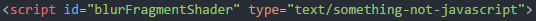
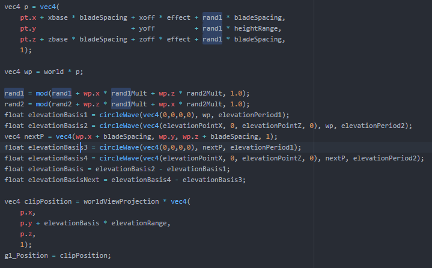
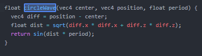
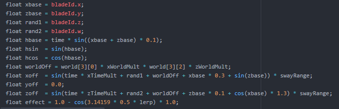
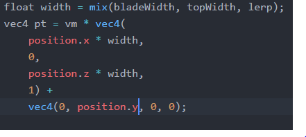
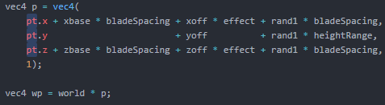

Este ejemplo busca modelar un campo de pasto en movimiento. Utiliza WebGL para el modelamiento de las entidades, y javascript para el manejo de la animación y los efectos de cámara.
El codigo divide la implementación en 2 partes.
La primera es la encargada de la inicialización de los componentes, el manejo de las entidades, la animación, el manejo de los efectos de la camara, y el manejo de los elementos y controles en html. Esta está escrita en javascript, y es la sección que acopla los diferentes elementos.
 La segunda parte se divide en los diferentes componentes del modelo, incluyendo el pasto, el efecto de blur, entre otros. Esta está escrita en GLSL(GL shader language), un lenguaje similar a C o C++ que se comunica directamente con la GPU. Se puede distinguir del codigo javascript por su tipo.
Lo que mas me interesó de la implementación de este ejemplo, fue el modelamiento del terreno. El menu de controles (Desplegado al hacer click sobre el asterisco en el menu principal) permite la modificación del terreno para lograr diferentes efectos.
Al examinar el codigo, observamos que la altura de cada elemento de pasto esta definido utilizando la posición en x y la posición en z del elemento. Utiliza la función ciclewave con una variable y luego con la otra, y las combina con las constantes de control (Definidas por el usuario, periodo, amplitud, etc), para obtener la posición en y del elemento.
Como se puede observar, la función circlewave aplica una funcion sinusoidal a las variables de entrada.
Otro aspecto que me interesó de este ejemplo fue la implementación de animaciones naturales al ambiente.
Similar al modelamiento del terreno, el codigo utiliza una función sinusoidal combinando la posición del pasto con los paramentros de movimiento. Luego modifica la posición en cada iteración de tiempo para pintar cada fotograma, logrando una simulación de viento bastante natural.
Al jugar con los controles de la simulación, noté que al modificar el tamaño de los elementos de pasto se reflejaba un efecto sobre la cantidad de fotogramas por segundo que se generaban. Esto no me pareció logico pues, a pesar de que cambiaba la forma de los pastos, no cambiaba la cantidad de poligonos en la pantalla.
 Al observar el codigo se puede observar que, como se habia teorizado, las variables del tamaño de los pastos se utilizan puramente para la modificación algebraica del elemento. Aun no logro explicar porqué se presenta este fenomeno.